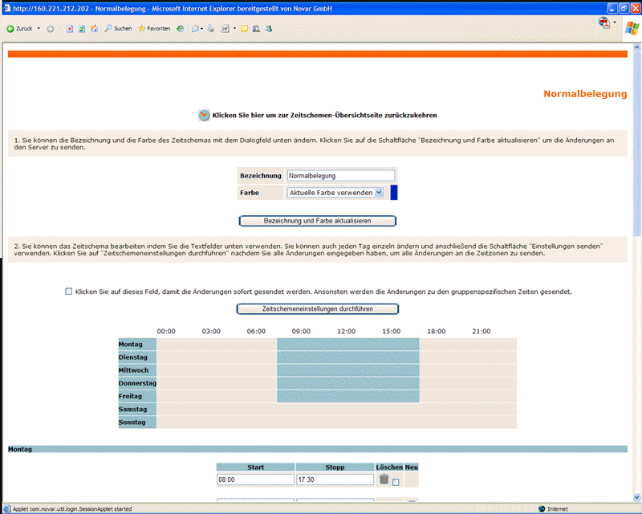

So zeigen Sie die Standardwoche für eine bestimmte Zeitzonengruppe an:
1 Greifen Sie auf den 963 Server zu, wie im Abschnitt „Verbindung zum 963 Server herstellen" in dieser Anleitung beschrieben..
2 Rufen Sie die Seite mit der Schaltfläche auf, über die auf die Zeitzonengruppe zugegriffen werden kann, und klicken Sie auf die Schaltfläche.
oder
Klicken Sie auf Zeitplaner. Es erscheint ein separates Fenster mit den Zeitzonengruppen oder Ordnern mit Zeitzonengruppen. Wählen Sie die gewünschte Zeitzonengruppe, indem Sie darauf klicken. Ist die gewünschte Zeitzonengruppe nicht sichtbar, können Sie zu ihr gelangen, indem Sie auf den entsprechenden Ordner klicken. Um zum vorhergehenden (übergeordneten) Ordner zurückzukehren, klicken Sie auf Eine Ordnerebene nach oben.
Nach Auswahl der gewünschten Zeitzonengruppe wird eine Seite mit den damit verbundenen Zeitzonen angezeigt, die den Zugriff auf die Standardwoche und Ausnahmen ermöglicht.
3 Klicken Sie auf Klicken Sie hier um zu den Zeitschemen dieser Gruppe zu wechseln.
4 Klicken Sie auf den Namen des Zeitschemas, das die Standardwoche definiert; dies ist durch den Text „Normalbelegung „ in der Spalte Zeitschemen-Typ angegeben. Eine Anzeige wie die unten dargestellte erscheint.
